- Reads
- Produces
- Boundary to remember
Real transactions. Local inference. Enforced boundaries.
Inside a contained
fraud investigation.
A trained detector identifies risk. A local Qwen agent gathers evidence. OpenShell restricts what its runtime can reach.
Apple Silicon + Docker DesktopOpenShell 0.1.2Banking actions simulated
01 / Components
Three responsibilities, separate boundaries
The detector and inference server run on the trusted host. The agent loop and guarded tools run inside the restricted workload.
02 / Processes
Follow the evidence from data to decision
Select a diagram. Each view has editable Mermaid source and publication images.


03 / Measured evidence
Different measurements answer different questions
This is a saved run snapshot, not live monitoring. A completed investigation does not certify reasoning quality or resistance to prompt injection.
Chronological data split
Partition size in transactions, after deduplication.
Held-out detector outcomes
Ground-truth labels are used only for offline evaluation.
Counts in transactions · predicted positive means score ≥ validation-selected threshold.
One completed investigation
Selected as the highest held-out score, without consulting labels. It is a demonstration, not a representative agent evaluation.
Direct containment probes
Pass means observed behavior matched the expected allow or deny result.
Direct Python I/O, bypassing FinGuard Guard and Runner. Timeouts are inconclusive, not passing denials.
Verification gate details
04 / Continue reading